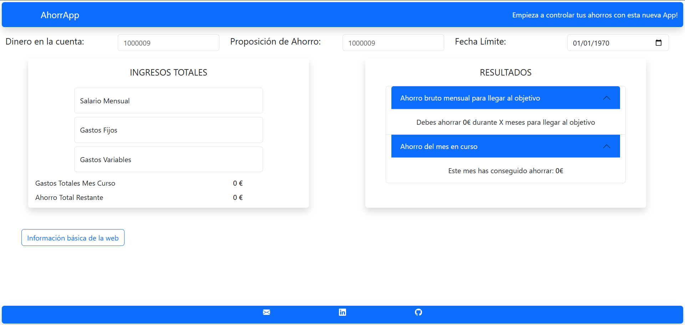
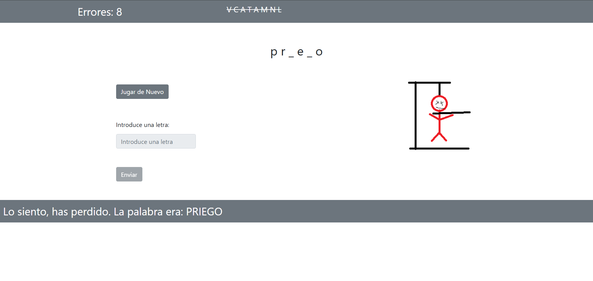

Sobre mi
Soy titulado en Desarrollo de Aplicaciones Web y llevo 2 años trabajando como programador en el ERP de Microsoft Business Central,
lo que me ha permitido adquirir experiencia en un entorno empresarial de alta demanda.
Aunque tengo experiencia trabajando con diversas tecnologías, me apasionan especialmente lenguajes como JavaScript, PHP y frameworks como Symfony,
áreas en las que me gustaría seguir profundizando. No obstante, estoy abierto a trabajar con cualquier tecnología,
ya que creo firmemente en la importancia de aprender y adaptarse a las herramientas que mejor se adapten a las necesidades del proyecto.
Además de la programación, tengo un gran interés por áreas como el diseño y desarrollo de videojuegos, la ciberseguridad y la IA, lo que me permite tener una visión más amplia y creativa en el ámbito tecnológico.
Experiencia Laboral
2023 - Actualidad
Junior Microsoft Business Central Developer · Integran Cloud Solutions
En mi puesto actual como desarrollador junior de Microsoft Business Central, he tenido la oportunidad de trabajar en un entorno empresarial dinámico y desafiante.
He participado en el desarrollo y mantenimiento de soluciones ERP actualizando las continuas incompatibilidades que genera Microsoft al actualizar los sistemas cada año, lo que me ha permitido adquirir experiencia en la personalización y optimización de procesos empresariales.
He trabajado en proyectos que implican la integración de sistemas, la creación de informes personalizados y la implementación de mejoras en la funcionalidad del software.
Esto me ha permitido desarrollar habilidades técnicas sólidas y una comprensión profunda de las necesidades empresariales.
- También he participado en procesos de migración de datos y actualización del sistema ERP de Microsoft.
- He trabajado en un desarrollo para conectar Dynamics Business Central con Sharepoint para hacer mas fluido y dinámico la gestión de documentos sin colapsar la base de datos de los clientes con el sistema natural de Dynamics.
Conocimientos Adquiridos: C/AL, AL, Microsoft Business Central, Sharepoint, RDL
Estudios
2022 - Presencial
FP Superior Desarrollo Aplicaciones Web
Durante este curso he aprendido a desarrollar aplicaciones web, tanto front-end como back-end, utilizando tecnologías como HTML, CSS, JavaScript y PHP.
He trabajado en proyectos prácticos que me han permitido aplicar mis conocimientos en el desarrollo de aplicaciones web, así como en la gestión de bases de datos y la creación de interfaces de usuario atractivas y funcionales.
Además, he adquirido habilidades en el uso de frameworks como Symfony, Bootstrap y JQuery, lo que me ha permitido mejorar mis capacidades de desarrollo y diseño web.
Durante el proceso de prácticas, he tenido la oportunidad de trabajar en un proyecto real, donde he podido aplicar mis conocimientos desarrollando una BDD SQL y una API RESTfull,
con PHP, y una interfaz de usuario utilizando HTML, CSS y JavaScript; Bootstrap y JQuery.
Conocimientos Adquiridos: Javascript, PHP, Symfony, JQuery, Bootstrap, SQL, HTML, CSS, Visual Studio Code, Postman
2023 - Online
FP Superior Desarrollo Aplicaciones Multiplataformas
Durante este curso he aprendido a desarrollar aplicaciones multiplataforma, tanto para dispositivos móviles como para ordenadores, utilizando tecnologías como Java y Kotlin principalmente.
He trabajado en proyectos prácticos que me han permitido aplicar mis conocimientos en el desarrollo de aplicaciones, así como en la gestión de bases de datos y la creación de interfaces de usuario atractivas y funcionales.
Durante este curso no hice prácticas porque compaginaba los estudios con el trabajo y pude convalidarlas.
Conocimientos Adquiridos:Java, Kotlin, MySQL, Eclipse, Android Studio
Proyectos
AhorrApp

Un pequeño proyecto que nace de mi necesidad de llevar al tanto las cuentas de mis ahorros, donde de forma fácil e intuitiva
podemos calcular que cantidad de dinero tenemos que ahorrar mensualmente para llegar a nuestro objetivo,
que cantidad de dinero tenemos ahorrado, y si en función de los gastos del mes en curso hemos ahorrado o no.
El proyecto está hecho con HTML, CSS y JavaScript, cuya maquetación es principalmente Bootstrap, y es totalmente responsive, por lo que se adapta a cualquier dispositivo.
Tecnologías utilizadas: HTML, CSS, JavaScript, Bootstrap
Juego del Ahorcado

El proyecto está hecho con HTML, CSS, JavaScript, PHP, cuya maquetación es principalmente Bootstrap, y es totalmente responsive, por lo que se adapta a cualquier dispositivo.
El juego permite escribir la palabra e ir descubriéndola poco a poco. Las palabras se obtienen de unos archivos lemarios, que son recorridos y leídos desde PHP.
Mediante una petición fetch, el PHP envía la palabra al JavaScript para su uso en el juego.
Tecnologías utilizadas: HTML, CSS, JavaScript, PHP, Bootstrap
Blog
El proyecto está hecho con HTML, CSS, JavaScript, PHP, cuya maquetación es principalmente Bootstrap, y es totalmente responsive, por lo que se adapta a cualquier dispositivo.
El juego permite escribir la palabra e ir descubriéndola poco a poco. Las palabras se obtienen de unos archivos lemarios, que son recorridos y leídos desde PHP.
Mediante una petición fetch, el PHP envía la palabra al JavaScript para su uso en el juego.
Tecnologías utilizadas: HTML, CSS, JavaScript, PHP, Bootstrap